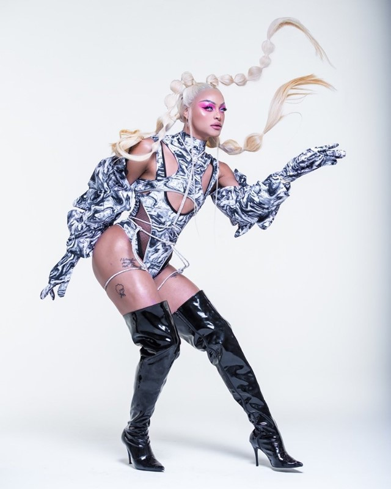

Né d'une mère célibataire, Pabllo n'a
jamais connu son père, parti avant sa naissance. Il passe son enfance dans l'État de Maranhão, d'abord à
Santa Inês puis à Santa Isabel do Pará. Prenant des cours de danse
classique, il avoue plus tard avoir été victime de brimades à l'école.
À l'adolescence, il emménage à Caxias où il chante dans des fêtes et dans le chœur d'une Église
presbytérienne. À l'âge de 16 ans, il s'installe à Indaiatuba pour tenter de démarrer une carrière
artistique mais finit par travailler dans des fast-foods pour subvenir à ses besoins. C'est à cette
époque qu'il fait son coming out à sa mère. Fin 2011, il lance une chaîne YouTube sur laquelle il poste
des reprises de morceaux célèbres.
Pabllo Vittar découvre l'univers des drag queen à l'âge de 17 ans, alors qu'il distribue des tracts
devant une boîte de huit d'Uberlândia. Peu après, il achète un crayon, un rouge à lèvres et sa première
perruque bon marché et participe à quelques concours de beauté avant de se tourner vers la musique. Il
se produit
pour ses débuts dans la boîte de nuit Belgrano située à Uberlândia.
Il entre finalement, par le biais des réseaux sociaux, avec Pedro d'Eyrot, membre de Bonde do Rolê, qui
montre les vidéos de Pabllo au producteur Rodrigo Gorky, lui aussi membre du groupe. Il enregistre alors
une version en langue portugaise de la chanson "Lean On" de Major Lazer intitulée "Open Bar", produite
par Bonde do Rolê et Omulu. En moins de quatre mois, la vidéo est visionnée un million de fois sur
YouTube.
Peu après, il sort son premier extended play contenant quatre autres titres qui sont des reprises en
portugais de chansons anglophones. N'ayant pas les autorisations nécessaires pour reprendre ces titres à
des fins commerciales, l'EP est supprimé des plateformes de téléchargement numériques pour violation des
droits d'auteur. À la suite de ce succès, il est invité à rejoindre le casting de l'émission Amor & Sexo
en 2016 mais y reste peu de temps, décidé à se concentrer sur sa carrière musicale.
En janvier 2017, Pabllo Vittar publie son premier album, Vai Passar Mal dont la chanson "Nêga" est le
premier single. Le deuxième single, "Everyday Day", en collaboration avec Rico Dalasam, est utilisée
lors du Carnaval du Brésil, ce qui lui offre la possibilité de se produire au Carnaval de Bahia.
Pabllo Vittar apparait par la suite dans des chansons d'artistes internationaux comme "Sua Cara" de
Major Lazer, avec la chanteuse brésilienne Anitta. Le chanteur apparaît également sur "I Got It",
extrait de la deuxième mixtape de Charli XCX, Pop 2. En 2017, il est la personnalité la plus recherchée
sur le moteur
de recherche Google Brésil.
En janvier 2018, il publie un documentaire sur sa vie et sa carrière sur Apple Music ainsi qu'un EP de
trois chansons en version live. Le 4 octobre sort son second album, Não Para Não, certifié disque d'or
tandis que toutes les chansons de l'album entrent dans le Top 50 des chansons les plus écoutées sur
Spotify
lors de sa sortie. Il entame une tournée le 1er novembre pour promouvoir son album. Le 7, il publie la
chanson "Highlight", qui sert de bande-son originale à la série animée de Netflix, Super Drags dans
laquelle
il double aussi le personnage de Goldiva. La série est finalement annulée au bout de cinq épisodes.
Le 13 et 14 avril 2019, il participe pour la première fois au festival Coachella aux États-Unis, en duo
avec
Major Lazer. Le même mois, il annonce la publication de 111, son troisième album pour le 1er novembre
suivant, un album qui sera trilingue (portugais, espagnol et anglais).
En juin 2021, Pabllo Vittar annonce la sortie de son quatrième album Batidão Tropical. L'album est
rythmé
par des sonorités de Forró et de Tecno-brega typique du Nord et Nord-Est brésilien. Il comprend 6
reprises
de groupes locaux. Le premier single est Ama Sofre Chora.